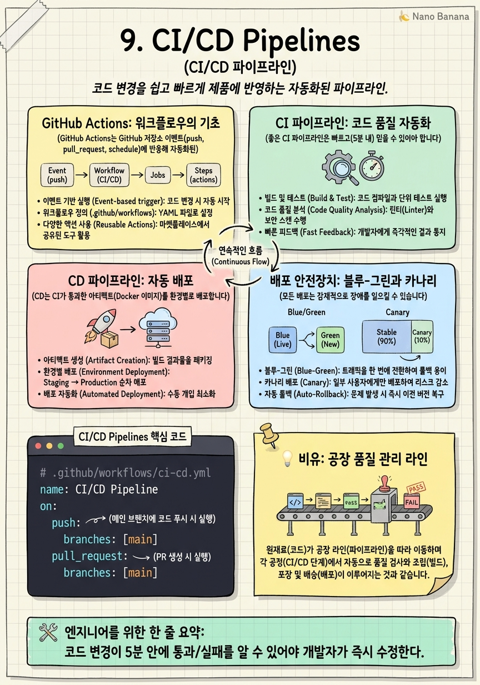

CI/CD Pipelines

🎯 학습 목표
- CI(지속적 통합)와 CD(지속적 배포)의 차이를 설명하고 각 단계에서 무엇을 해야 하는지 안다
- GitHub Actions로 테스트·린팅·빌드를 자동화하는 워크플로우를 작성할 수 있다
- Docker 이미지를 빌드해 컨테이너 레지스트리에 푸시하는 파이프라인을 구성할 수 있다
- 환경별(dev/staging/prod) 배포 전략을 설계하고 롤백 절차를 안다
- 블루-그린 배포와 카나리 배포의 차이와 각각의 장단점을 설명할 수 있다
"배포가 무섭다"는 말은 CI/CD가 없는 팀에서 자주 들립니다. 수동 배포는 실수가 잦고, 새벽에 긴급 배포하면 누가 뭘 어떻게 했는지 기억도 안 납니다. CI/CD는 이 공포를 제거합니다. 코드를 푸시하면 자동으로 테스트를 실행하고, 통과하면 배포합니다. 사람이 "배포 스크립트 실행"을 기억할 필요가 없습니다.
CI(Continuous Integration, 지속적 통합) 는 개발자들이 코드 변경사항을 자주 공유 브랜치에 통합하고, 매 통합 시 자동으로 빌드·테스트를 실행하는 관행입니다. 목표는 통합 오류를 빠르게 발견하는 것입니다.
CD(Continuous Delivery/Deployment, 지속적 배포) 는 CI를 통과한 코드를 자동(또는 승인 후)으로 프로덕션에 배포하는 관행입니다. Delivery는 배포 준비까지, Deployment는 실제 프로덕션 배포까지 자동화합니다.
AI 엔지니어에게 CI/CD는 모델 서빙 파이프라인 자동화에 직결됩니다. 새 모델 버전이 평가를 통과하면 자동으로 스테이징에 배포하고, 성능 기준을 충족하면 프로덕션에 반영하는 파이프라인을 구축합니다.
핵심 내용
GitHub Actions: 워크플로우의 기초
GitHub Actions는 GitHub 저장소 이벤트(push, pull_request, schedule)에 반응해 자동화된 작업을 실행하는 CI/CD 플랫폼입니다.
핵심 개념
Workflow 는 .github/workflows/*.yml 파일로 정의됩니다. 하나 이상의 Job으로 구성됩니다.
Job 은 하나의 러너(실행 환경)에서 실행되는 Step의 집합입니다. Job들은 기본적으로 병렬로 실행되지만 needs로 순서를 지정할 수 있습니다.
Step 은 Job 안의 개별 작업입니다. uses (Action 사용) 또는 run (쉘 명령 실행) 중 하나입니다.
Triggers 는 워크플로우를 실행하는 이벤트입니다.
push: 브랜치에 코드가 푸시될 때pull_request: PR이 열리거나 업데이트될 때schedule: cron 표현식으로 주기적 실행workflow_dispatch: 수동 실행
Actions Marketplace 에는 수천 개의 재사용 가능한 Action이 있습니다. actions/checkout, actions/setup-python, docker/build-push-action 같은 공식 Action은 반드시 특정 버전(@v4)을 명시합니다.
CI 파이프라인: 코드 품질 자동화
좋은 CI 파이프라인은 빠르고(5분 내) 믿을 수 있어야 합니다. 너무 느리면 개발자들이 CI 결과를 기다리지 않고 다음 작업을 시작합니다.
CI 파이프라인이 포함해야 할 단계
-
Lint & Format:
ruff,black,isort로 코드 스타일 자동 검사. 팀 코드 스타일 일관성 유지. -
Type Check:
mypy로 타입 오류 정적 분석. 런타임 오류를 사전에 방지. -
Unit Test:
pytest로 유닛 테스트 실행. 코드 커버리지 리포트 생성. -
Integration Test: 실제 DB나 Redis를 Docker Compose로 띄워 통합 테스트.
-
Security Scan:
bandit으로 파이썬 보안 취약점 스캔.trivy로 Docker 이미지 취약점 스캔.
병렬 실행 으로 시간을 줄입니다. Lint, Type Check, Unit Test는 서로 의존성이 없으므로 동시에 실행할 수 있습니다.
캐싱 으로 반복 실행 속도를 높입니다. actions/cache로 pip 패키지, Docker 레이어를 캐시합니다. PyTorch 같은 대용량 패키지의 반복 다운로드를 방지합니다.
CD 파이프라인: 자동 배포
CD는 CI가 통과한 아티팩트(Docker 이미지)를 환경별로 배포합니다.
환경 구분
-
Development (dev): 개발자들이 기능을 테스트하는 환경. 최신 코드를 자유롭게 배포.
-
Staging: 프로덕션과 동일한 설정. 출시 전 최종 검증. 실제 데이터 일부 사용.
-
Production (prod): 실제 사용자들이 쓰는 환경. 배포 승인이 필요하거나 자동화(CD).
배포 전략
브랜치 전략과 배포를 연결합니다.
main브랜치 push → dev 자동 배포release/*브랜치 push → staging 자동 배포- Tag (
v1.2.0) push → production 배포 (수동 승인 or 자동)
Docker 이미지 태깅 전략
latest: 최신 빌드. 프로덕션에latest사용 금지 (재현 불가){git-sha}: 커밋 해시. 정확한 버전 추적.image:abc123f{semver}: 시맨틱 버전.image:1.2.0. 사람이 읽기 좋음.
배포 안전장치: 블루-그린과 카나리
모든 배포는 잠재적으로 장애를 일으킬 수 있습니다. 안전한 배포 전략은 오류가 발생했을 때 피해를 최소화하고 빠르게 롤백합니다.
블루-그린 배포(Blue-Green Deployment) 는 두 개의 동일한 프로덕션 환경을 유지합니다. 현재 서빙 중인 환경이 Blue이고, 새 버전을 배포할 환경이 Green입니다. Green에 새 버전을 배포하고 테스트가 완료되면 로드 밸런서가 트래픽을 Green으로 전환합니다. 문제가 있으면 즉시 Blue로 되돌립니다. 롤백이 초 단위로 가능합니다. 단점은 두 배의 인프라 비용입니다.
카나리 배포(Canary Deployment) 는 새 버전을 전체 트래픽의 일부(1% → 5% → 20% → 100%)에게만 서빙합니다. 문제가 발생하면 카나리 트래픽을 0%로 줄입니다. AI 서비스에서 새 모델 버전을 소수 사용자에게 테스트하는 A/B 테스트에 적합합니다.
롤백(Rollback) 은 K8s에서 kubectl rollout undo deployment/ml-server로 이전 Deployment 버전으로 즉시 되돌립니다. 이것이 가능하려면 이전 이미지가 레지스트리에 남아 있어야 하므로, latest 태그만 사용하면 안 됩니다.
시크릿 관리와 환경 분리
CI/CD 파이프라인에서 시크릿(DB 비밀번호, API 키, K8s 클러스터 인증 정보)을 안전하게 다루는 것이 중요합니다.
GitHub Actions Secrets 는 저장소 또는 환경(Environment) 레벨에서 시크릿을 저장합니다. ${{ secrets.MY_API_KEY }}로 워크플로우에서 참조합니다. 로그에 시크릿 값이 노출되지 않도록 자동으로 마스킹됩니다.
환경(Environment) 보호 규칙 을 사용하면 프로덕션 배포 시 특정 리뷰어의 승인이 필요하도록 설정할 수 있습니다. staging 환경은 자동 배포, production 환경은 팀 리드 승인 후 배포하는 정책을 GitHub에서 강제할 수 있습니다.
OIDC(OpenID Connect) 인증 을 사용하면 장기 유효 자격증명(Access Key) 없이 CI/CD가 AWS, GCP 등에 인증할 수 있습니다. GitHub Actions가 일회용 OIDC 토큰을 발급하고, AWS가 이 토큰을 검증해 임시 자격증명을 발급합니다. 자격증명 노출 위험이 크게 줄어듭니다.
💡 비유로 이해하기
CI/CD를 자동차 공장 조립 라인으로 이해해봅시다. 자동차 부품(코드)이 컨베이어 벨트(CI 파이프라인)에 올라가면 각 스테이션에서 자동 검사가 이루어집니다. 용접 품질 검사(린팅), 강도 테스트(유닛 테스트), 안전 기준 검사(보안 스캔).
모든 검사를 통과한 자동차(Docker 이미지)는 창고(컨테이너 레지스트리)에 보관됩니다. 완성된 자동차가 딜러에게 배송되는 것이 CD(배포)입니다. 카나리 배포는 신모델을 일부 딜러에게만 먼저 배포해 시장 반응을 테스트하는 것과 같습니다.
이전에는 모든 것을 수동으로 했습니다 — 검사원이 직접 용접부를 눈으로 보고, 수동으로 강도를 측정했습니다. 자동화된 라인은 실수가 없고, 기록이 남으며, 24시간 일합니다. CI/CD가 소프트웨어 배포에 가져온 변화와 같습니다.
💻 코드 예시
AI 서비스의 전체 CI/CD 파이프라인 GitHub Actions 워크플로우입니다. 테스트, 이미지 빌드, K8s 배포를 자동화합니다.
# .github/workflows/ci-cd.yml
name: CI/CD Pipeline
on:
push:
branches: [main]
pull_request:
branches: [main]
env:
IMAGE_NAME: myregistry/ml-service
jobs:
# ── CI: 테스트 및 린팅 ────────────────────────────────
test:
runs-on: ubuntu-latest
strategy:
matrix:
python-version: ["3.11"] # 필요 시 복수 버전 테스트
steps:
- uses: actions/checkout@v4
- uses: actions/setup-python@v5
with:
python-version: ${{ matrix.python-version }}
cache: pip # pip 캐시로 반복 설치 생략
- run: pip install -r requirements.txt -r requirements-dev.txt
- name: Lint
run: ruff check . && ruff format --check .
- name: Type check
run: mypy src/
- name: Test
run: pytest tests/ --cov=src --cov-report=xml
# ── CD: 이미지 빌드 & 배포 (main에 push될 때만) ─────────
deploy:
needs: test # 테스트 통과 후에만 실행
if: github.ref == 'refs/heads/main' && github.event_name == 'push'
runs-on: ubuntu-latest
environment: staging # GitHub Environment 보호 규칙 적용
steps:
- uses: actions/checkout@v4
- name: Log in to registry
uses: docker/login-action@v3
with:
username: ${{ secrets.REGISTRY_USER }}
password: ${{ secrets.REGISTRY_PASSWORD }}
- name: Build and push image
uses: docker/build-push-action@v5
with:
push: true
tags: |
${{ env.IMAGE_NAME }}:${{ github.sha }}
${{ env.IMAGE_NAME }}:latest
cache-from: type=gha # GitHub Actions 캐시로 Docker 레이어 재사용
cache-to: type=gha,mode=max
- name: Deploy to K8s
run: |
# 이미지 태그만 업데이트 (롤링 업데이트 트리거)
kubectl set image deployment/ml-server \
inference=${{ env.IMAGE_NAME }}:${{ github.sha }} \
--recordneeds: test는 test Job이 성공해야만 deploy Job을 실행합니다. if: github.ref == 'refs/heads/main'은 main 브랜치 push에만 배포합니다. PR은 테스트만 실행합니다. github.sha로 이미지를 태깅하면 어떤 커밋에서 빌드된 이미지인지 정확히 추적할 수 있습니다. cache-from: type=gha는 이전 빌드의 Docker 레이어를 재사용해 빌드 시간을 크게 줄입니다.
🏭 현업에서의 평가
✅ 시니어가 보는 것
- 배포와 릴리스를 분리하는 개념을 이해하는가 (Feature Flag 등)
- 롤백 절차가 명확하고 자동화되어 있는가
- 시크릿을 파이프라인에서 안전하게 다루는가
⚠️ 레드 플래그
- latest 태그만 사용해 롤백이 불가능한 경우
- CI를 거치지 않고 프로덕션에 직접 배포하는 경우
- DB 마이그레이션을 배포 스크립트에 포함시켜 롤백 시 충돌이 발생하는 경우
🎤 예상 인터뷰 질문
- 배포 도중 오류가 발생했을 때 30초 안에 롤백하는 방법은?
- DB 스키마 변경과 코드 변경을 어떻게 안전하게 함께 배포하겠어요?
- 카나리 배포 중 새 버전이 5% 트래픽에서 오류율이 2% 높게 나올 때 어떻게 하겠어요?
✨ 핵심 요약
CI = 빠른 피드백
코드 변경이 5분 안에 통과/실패를 알 수 있어야 개발자가 즉시 수정한다.
이미지 태그 = 커밋 해시
latest만으로 배포하면 롤백이 불가능하다. 항상 git sha로 이미지를 태깅한다.
환경 분리
dev → staging → prod 환경을 분리하고, staging에서 검증 후 prod에 배포한다.
카나리로 리스크 감소
새 버전을 1~5%에 먼저 배포해 전체 롤아웃 전에 문제를 발견한다.
OIDC 인증
장기 유효 Access Key 대신 OIDC 임시 자격증명으로 클라우드 인증한다.
DB 마이그레이션 분리
DB 변경은 이전 버전과 호환되도록 먼저 적용하고, 코드 배포 후 이전 열을 삭제한다.